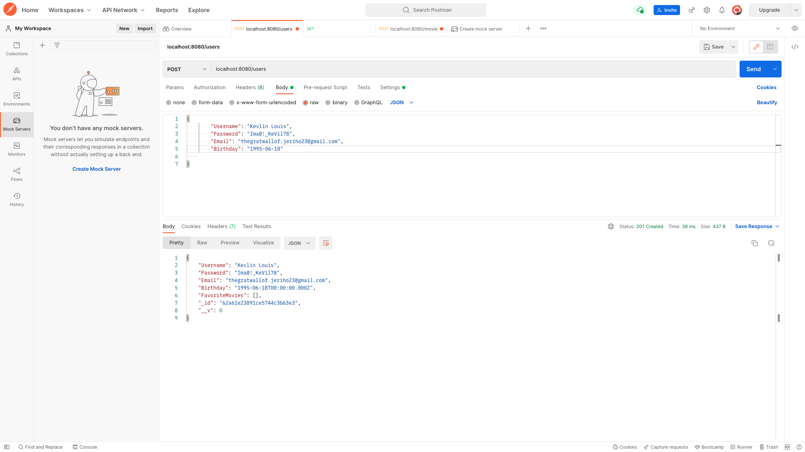

MyFlix App: Case Study
Case Study Overview
MyFlix is a info-movie app, created for people who love all about cinema. Like the All Movie Guidethis app is a friendly search tool for information about any movie, and to keep the best ones in hand, in a list of favourites, for the next movie session or chat.
The project was one of the achievements of Career Foundry course, with the aim to teach and practice a complete experience of a Full-Stack developer, using one of the most common tech stacks of the moment, MERN (MongoDB, Express, React and Node.js).


Server-Side Server-Side
To store the movies and users information, a server-side with RESTful API (interface to exchange information securely over the internet) was built with Node.js and Express, which interacts with a database in MongoDB. To access the API the CRUD (create, read, update and delete) method was implemented and the answers were given in a JSON format (text-based format for Javascript object syntax). The Postman app was also used as a crucial tool to test each executed request.
An important step was to include user authentication and authorization logic in the form of basic HTTP and JWT (JSON Web Token) which is a standard internet tool that, after user registration, based on the user's credentials, generates an encrypted token to prevent security issues.


Client-Side Approach
Changing gears to the user’s point of view, the web page was developed with React (a modern Javascript library) and React-Redux (a state manager to guarantee consistent behaviour across server and client logic). Bootstrap (a Javascript styling library) was also used with some of its pre-built components.
After a short register or login, users can navigate between the main view, where a movie list and a search tool is provided to quickly find specific movies; a movie details view that shows more information about the movie like synopis, genre and director; a separate genre and director views; and the user's own profile, where they can edit their own data or look/remove movies from their favourite list.

Challenge Faced
Working with react is my goal, so I was excited to build this app from the beginning. The struggles were most related to the backend since it has a new way to work and debug, but I coop with that with the same natural procedure steps: google search for documentation for new frameworks and libraries, google search for specific issues, console logging when it was possible, including debugging function, and asking for help when none of the firsts could solve my problem.
The next steps for this app will be a better styling tool or intensive Bootstrap learning, to improve visual aspects and a more friendly user experience, although all the chosen tools were a great selection from the course.
Another important lesson is to save more time to reach the expectations of the schedule.
Credits:
- Role: Lead Developer
- Tutor: Jennifer Wjertzoch
- Mentor: Treasure Kabareebe